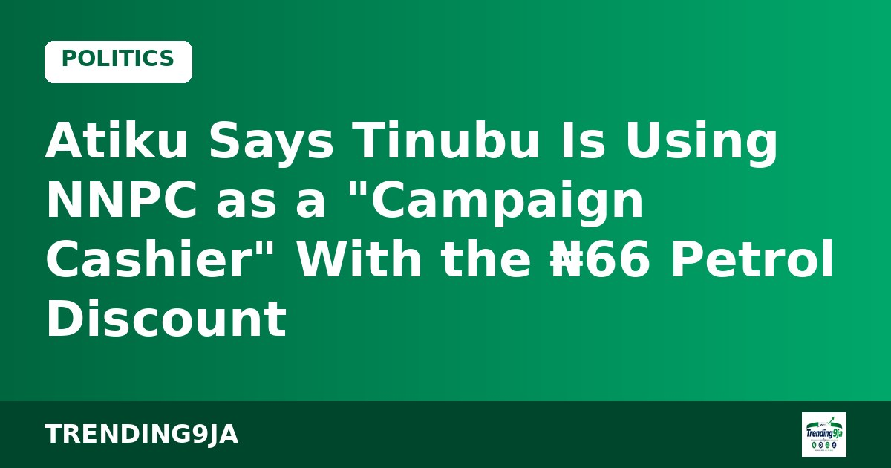
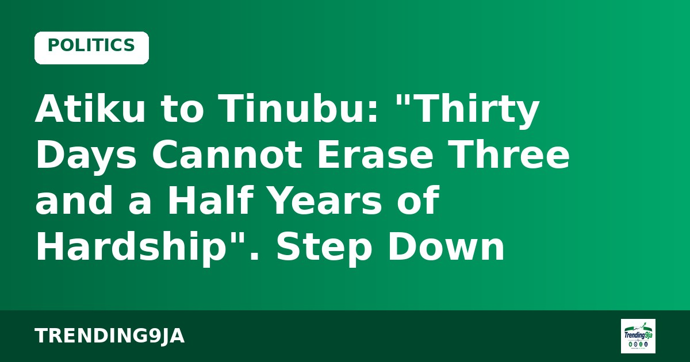
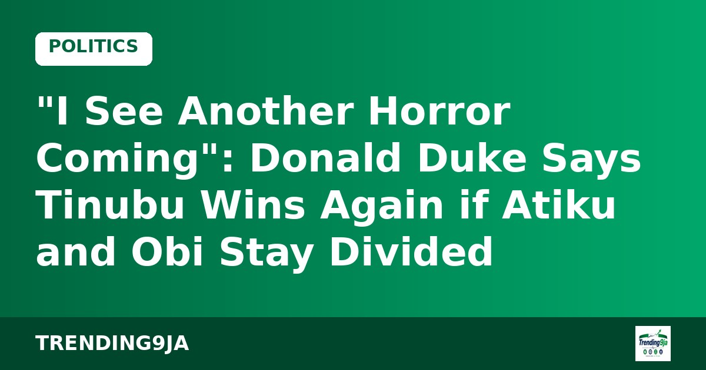

Makinde Vows One-Term Presidency and a Government of National Unity, Challenges Tinubu on Fuel Prices
"2027 will mark the end of the politics of lies and deceit," the APM candidate says in Yola.

The African Democratic Congress (ADC) has formally kicked off its 2027 presidential campaign, unveiling its Presidential Campaign Council in Abuja on Friday, 9 October. The party's ticket is Atiku Abubakar and Rotimi Amaechi.
Speaking at the event, the campaign's Director-General, Austin Akobundu, quoted Atiku directly: "Tinubu made life expensive. I will make life affordable again." Campaign Council Chairman Kashim Ibrahim-Imam went harder: "The palace feasts while the people fast!" and "Tinubu priced you out of your own country. Atiku will bring you back in."
What the ADC is promising: local refining backed by a targeted, budgeted production subsidy for fuel refined in Nigeria; reforms in electricity, education, healthcare and agriculture; a review of the Nigerian Education Loan Fund with student debt forgiveness; better security on farmlands; and implementation of the Supreme Court judgment on local government autonomy.
The party also pointed to public debt, which it says rose from N87.38 trillion when Tinubu took office to N166.79 trillion by 30 June 2026. These are the ADC's figures, as cited at the launch.
National Chairman David Mark and the campaign team accused the administration of using state agencies to intimidate party members, vowing: "The ADC will resist every form of intimidation and harassment!" They also condemned the continued detention of ADC Deputy Chairman Nasir El-Rufai, a former Kaduna State governor.
Your turn: Are these promises enough to move voters? Tell us with #Trending9ja
Sources: Vanguard
← More Politics stories
"2027 will mark the end of the politics of lies and deceit," the APM candidate says in Yola.

"You borrowed the recipe for feeding a nation and returned with a tasting spoon," the ADC candidate says.

The ADC candidate rejects the 30-day petrol discount, demands electoral reforms and says there will be no "no-go areas" for his campaign.

The PRP candidate blames "large egos" for the opposition's failure to unite behind one platform.

He calls his 2023 vote "one decision I am honestly ashamed of" and launches #ArewaForAsiwaju.